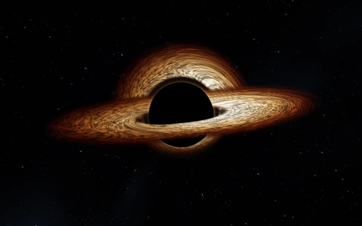
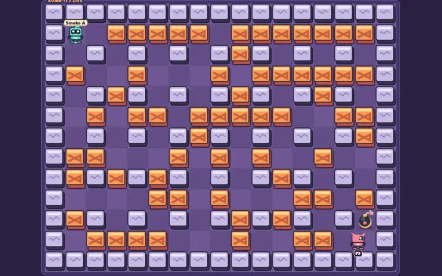
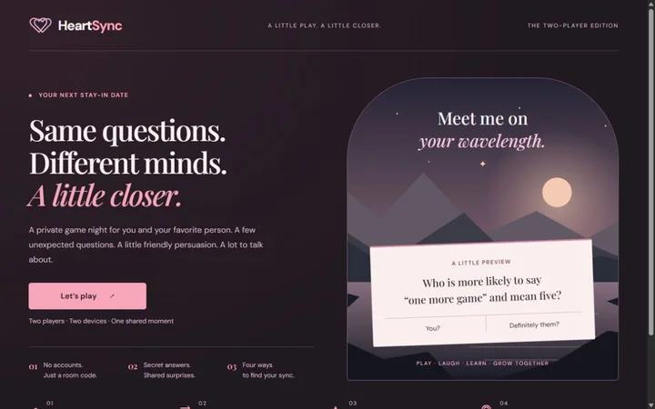
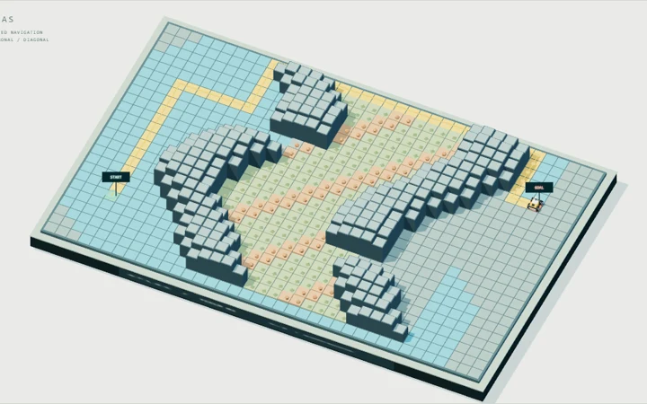

enter event horizon ↗WZC / Open Bench
Ideas.
Experiments.
Questionable
progress.
Mechatronics, code & play.
Find your next rabbit holeMECHATRONICS / CODE / PLAYLeave room for the unexpected.
WZC / Open Bench
Mechatronics, code & play.
Find your next rabbit holeMECHATRONICS / CODE / PLAYLeave room for the unexpected.

enter event horizon ↗
play now ↗
play together ↗
run experiment ↗